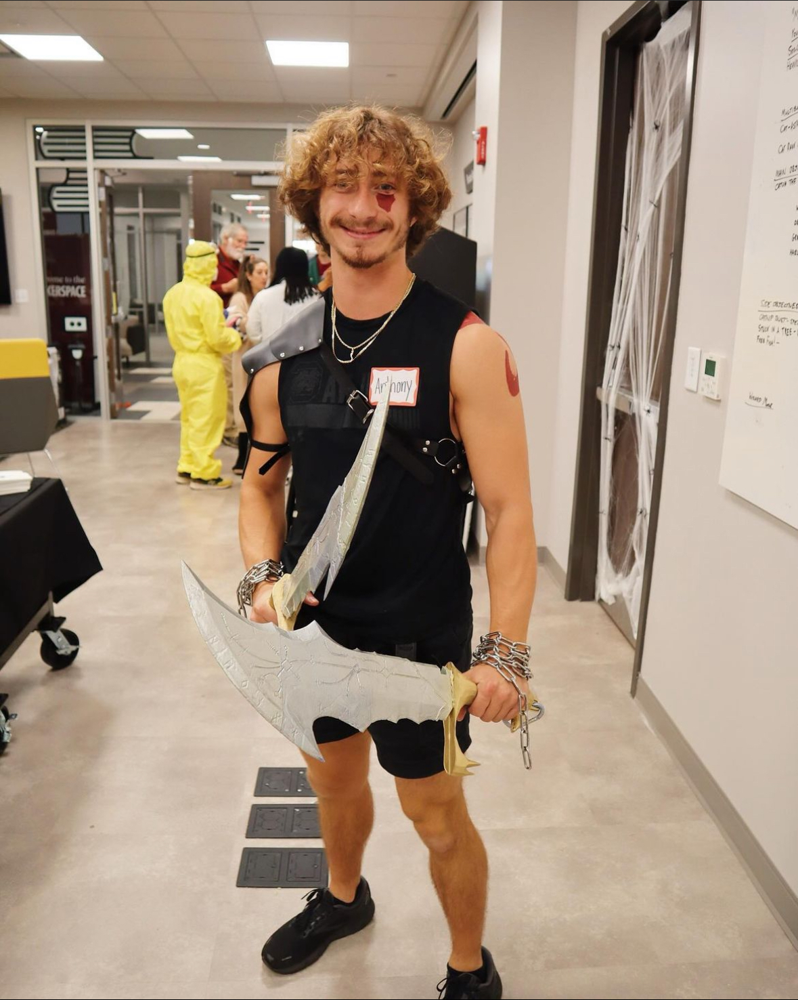
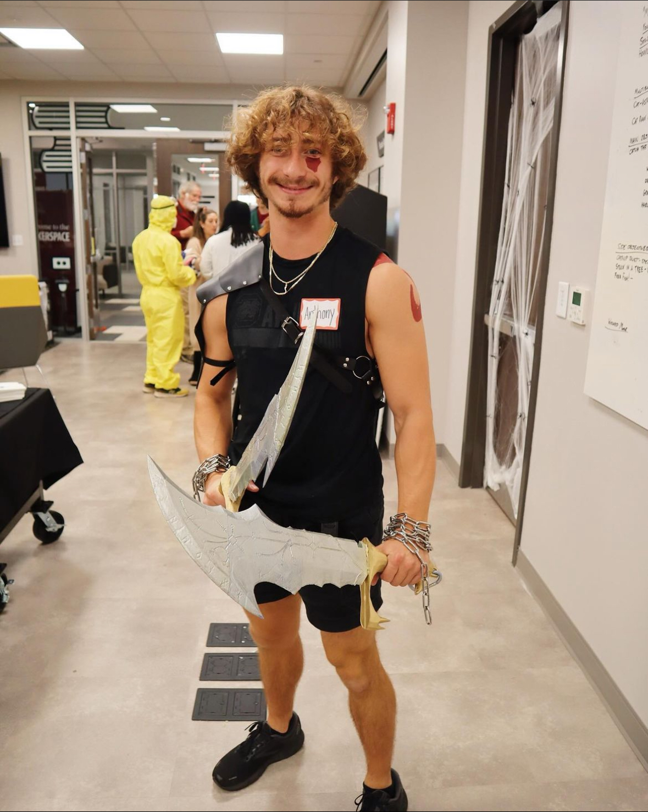

Lifesize Blades of Chaos
Motivation
As part of the yearly Rhodos Halloween costume party, students are tasked with designing their very own costumes by utilizing the equipment available to them in the makerspace. For the 2023 year, I decided to be Kratos from one of my all time favorite video games: God of War. This costume consists of the signature weapon of Kratos, the Blades of Chaos, and a simple greek tunic that I found on amazon.
Challenge
Create lifesize version of the Blades of Chaos that are capable of being swung from chains.
Solution
3D print the blades and then assemble them into one peice. Drill a wooden dowel into hilt which connects to the blade providing additional support.
Approach
In order to make the blades of chaos, I decided to approach the build by 3D printing the design. After combining two designs I found on Thingiverse, and multiple days of printing, I had all the parts I needed to make life-sized replicas of the blades. With the aid of some silver and gold spray paint and chains bought off amazon, I began to assemble the blades. Due to how heavy the blades were compared to the hilt of the weapon, I was struggle to superglue these parts together. As part of the costume, I wanted to be able to swing the blades from the chains which would require a very strong bond between these parts. To ensure the integrity of the build, I decided to drill wooden dowels into hilt and blades which provided the added strength in the design to survive the motion of swinging.
| Skills Demonstrated | Project Artifacts |
|---|---|
| 3D Printing | n/a |
Benefits
Made of PLA so it is cheap and lightweight but still durable enough to be used as a costume prop. They now serve as a nice hanging decoration for my apartment:
 
